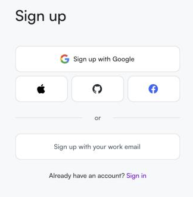
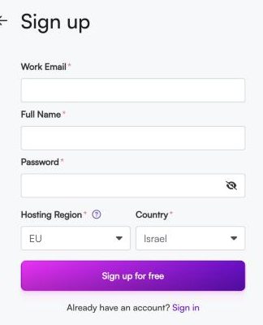

לפני שמתחילים
מה זה Make ולמה צריך חשבון
Make (בעבר Integromat) היא פלטפורמה ויזואלית לבניית אוטומציות: מחברים אפליקציות ושירותים זה לזה וגוררים בלוקים כדי לבנות תהליך שרץ לבד. בקורס נשתמש בה החל ממפגש 4. כדי להתנסות ולתרגל צריך קודם חשבון משתמש — וההרשמה חינמית.
מה צריך מראשכתובת אימייל פעילה שאתם יכולים לפתוח עכשיו (לאימות), דפדפן, וכ-5 דקות. אין צורך בכרטיס אשראי לתוכנית החינמית.
שלב 1
כניסה לאתר ולחיצה על ההרשמה
- פתחו דפדפן וגשו לכתובת
make.com - בפינה העליונה לחצו על הכפתור הסגול Get started free (או היכנסו ישירות לכתובת
make.com/en/register)
שלב 2
בחירת דרך ההרשמה
במסך ההרשמה (Sign up) יש שתי דרכים להירשם:
- הרשמה מהירה עם חשבון קיים — Google, Apple, GitHub או Facebook. לוחצים, מאשרים, ונכנסים בלי לזכור סיסמה נוספת.
- הרשמה עם אימייל — לוחצים על Sign up with your work email וממלאים טופס קצר.

מה מומלץ לקורסאם יש לכם חשבון Google — זו הדרך הכי מהירה ואין צורך באימות אימייל נפרד. מי שמעדיף — ההרשמה באימייל עובדת מצוין גם היא, ואותה נסביר בהמשך.
שלב 3
מילוי טופס ההרשמה (באימייל)
אחרי לחיצה על Sign up with your work email נפתח טופס עם השדות הבאים:

- Work Email — אימייל
כתובת האימייל שלכם. לכאן יישלח קישור אימות, אז הזינו כתובת שאתם יכולים לפתוח עכשיו. - Full Name — שם מלא
השם שלכם (יוצג בחשבון ובהזמנות לצוות). - Password — סיסמה
בחרו סיסמה חזקה (לפחות 8 תווים, מומלץ אותיות גדולות/קטנות, מספר וסימן). הקליקו על אייקון העין כדי לראות מה הקלדתם. - Hosting Region — אזור אירוח
היכן יאוחסנו הנתונים שלכם: EU (אירופה) או US (ארה״ב). הבחירה קבועה ולא ניתנת לשינוי לאחר ההרשמה. מישראל בדרך כלל נוח לבחור EU. - Country — מדינה
המדינה שלכם. לרוב Make מזהה אוטומטית Israel.
שימו לב — אזור האירוח קבועבניגוד לשאר הפרטים, את Hosting Region אי אפשר לשנות אחרי שנרשמתם. אם חשוב לכם אזור מסוים (למשל בגלל חיבור לשירות אחר שמאוחסן ב-US), בחרו אותו עכשיו. אם אין העדפה — EU בחירה טובה.
- מלאו את כל השדות
- לחצו על הכפתור הסגול Sign up for free
שלב 4
אימות האימייל
אחרי השליחה, Make שולח אליכם מייל אימות. (מי שנרשם עם Google מדלג על השלב הזה.)
- פתחו את תיבת הדואר שהזנתם
- חפשו מייל מ-Make בנושא אימות (Confirm your email). אם אינו בתיבה — בדקו בתיקיית הספאם/קידומי מכירות
- לחצו על כפתור/קישור האימות שבמייל
לא הגיע מייל?המתינו דקה, רעננו, ובדקו ספאם. במסך האימות של Make יש גם כפתור Resend לשליחה חוזרת. ודאו שלא הייתה שגיאת כתיב בכתובת.
שלב 5
כניסה ראשונה — החשבון מוכן
אחרי האימות אתם נכנסים אל לוח הבקרה של Make. Make עשוי לשאול כמה שאלות קצרות (למה אתם מתכננים להשתמש בכלי) — אפשר לענות או לדלג. אחרי זה תגיעו למסך הראשי שבו בונים תרחישים (Scenarios).
זהו — יש לכם משתמש פעיל ב-Make 🎉שמרו את פרטי ההתחברות. במפגש 4 נתחבר לחשבון הזה ונבנה את התרחיש הראשון.
תקלות נפוצות
אם משהו נתקע
- הכפתור Sign up לא מגיב
ודאו שכל שדות החובה (עם הכוכבית *) מלאים, ושהסיסמה עומדת בדרישות. - "האימייל כבר רשום"
כבר יש לכם חשבון. עברו למסך Sign in והתחברו, או השתמשו ב-Forgot password. - בחרתי אזור אירוח לא נכון
אי אפשר לשנות אזור לחשבון קיים. אם זה קריטי — צרו חשבון חדש עם אימייל אחר ובחרו את האזור הנכון. - לא בטוחים איזה אזור לבחור
לקורס אין הבדל מעשי. EU בחירה טובה ובטוחה מישראל.